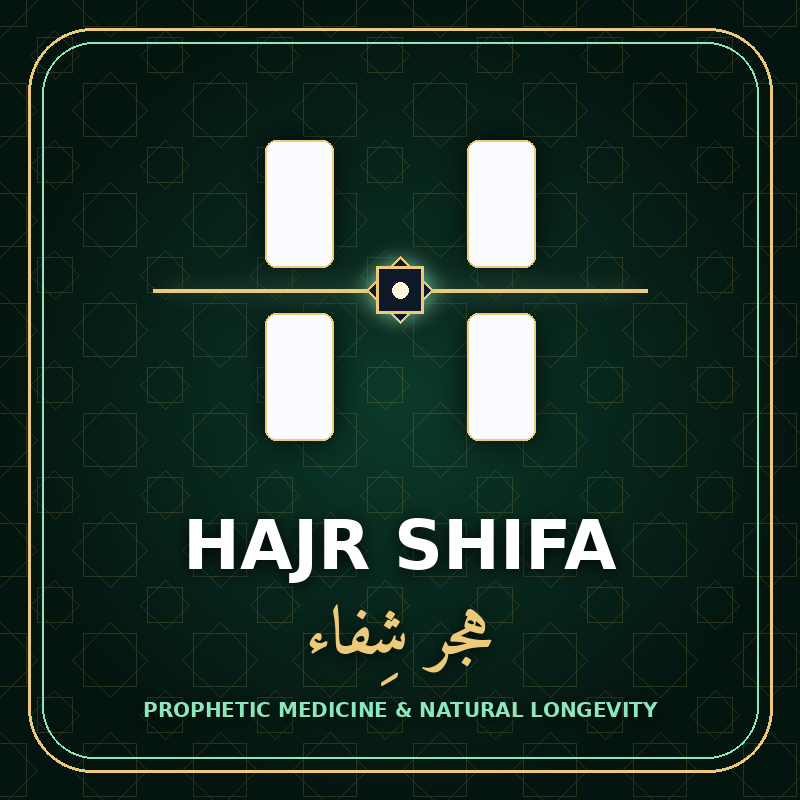

هجر شِفاء | HAJR Shifa
منصة علمية وشرعية موثقة تجمع بين ما ثبت يقيناً في القرآن الكريم وصحيحي البخاري ومسلم في الطب النبوي والشفاء الطبيعي، وبين أحدث الأبحاث الطبية المحكّمة في قاعدة (NCBI PubMed) بـ 5 لغات عالمية، دون أي أحاديث ضعيفة أو خلطات غير موثقة.
🔬 منهجية التدقيق المزدوج (الشرعي والعلمي) في هجر شِفاء
لا يُنشر في «هجر شِفاء» إلا ما ثبت بنص صريح من القرآن الكريم أو صحيح البخاري أو صحيح مسلم، مقروناً برقم الدراسة السريرية الموثقة (PMID) في المكتبة الوطنية الأمريكية للطب (PubMed).
#01 — الحَبَّةُ السَّوداءُ (حَبَّةُ البَرَكَة) (Black Seed (Nigella sativa))
قَالَ رَسُولُ اللَّهِ ﷺ: «فِي الْحَبَّةِ السَّوْدَاءِ شِفَاءٌ مِنْ كُلِّ دَاءٍ إِلَّا السَّامَ»
📖 التوثيق الشرعي: متفق عليه — صحيح البخاري (٥٦٨٨) وصحيح مسلم (٢٢١٥) | 🔬 المرجع الطبي: PubMed PMID: 34073784 ↗
تُثبِتُ الأبحاثُ السريريةُ الموثقةُ في قاعدةِ (PubMed) أنَّ المركبَ الفعّالَ في الحبةِ السوداءِ وهو (الثيموكينون - Thymoquinone) يضبطُ مؤشراتِ الالتهابِ الخلويِّ، ويُنشّطُ الخلايا المناعيةَ الطبيعيةَ، ويحمي الخلايا من الإجهادِ التأكسديِّ.
#02 — العَسَلُ الطَّبيعِيُّ وَشِفاءُ الجِهازِ الهَضمِيّ (Raw Natural Honey & Gut Microbiome Healing)
قَالَ اللَّهُ تَعَالَى: ﴿يَخْرُجُ مِن بُطُونِهَا شَرَابٌ مُّخْتَلِفٌ أَلْوَانُهُ فِيهِ شِفَاءٌ لِّلنَّاسِ﴾ [النحل: ٦٩]
📖 التوثيق الشرعي: القرآن الكريم [النحل: ٦٩] — وصحيح البخاري (٥٦٨٤) وصحيح مسلم (٢٢١٧) | 🔬 المرجع الطبي: PubMed PMID: 28901255 ↗
تُثبتُ أبحاثُ (PubMed) أنَّ العسلَ الطبيعيَّ غيرَ المبسترِ غنيٌّ بإنزيمِ أوكسيداز الجلوكوز والمركباتِ الحيويةِ البريبيوتيك التي تقضي على البكتيريا الضارةِ مثل جرثومةِ المعدةِ وتُرمّمُ الغشاءَ المخاطيَّ للجهازِ الهضميّ.
#03 — التَّلبينَةُ النَّبَوِيَّةُ (حَساءُ الشَّعير) (Prophetic Talbinah (Barley Broth))
قَالَ رَسُولُ اللَّهِ ﷺ: «التَّلْبِينَةُ مُجِمَّةٌ لِفُؤَادِ الْمَرِيضِ، تَذْهَبُ بِبَعْضِ الْحُزْنِ»
📖 التوثيق الشرعي: متفق عليه — صحيح البخاري (٥٤١٧) وصحيح مسلم (٢٢١٦) | 🔬 المرجع الطبي: PubMed PMID: 41075026 ↗
تحتوي التلبينة المحضرة من دقيق الشعير الكامل بنخالته على ألياف البيتا جلوكان والتربتوفان والمغنيسيوم التي تغذي محور الأمعاء والدماغ وتدعم هرمون السيروتونين وتخفف التوتر.
#04 — زَيتُ الزَّيتونِ المُبارَك (Blessed Olive Oil (Olea europaea))
قَالَ اللَّهُ تَعَالَى: ﴿يُوقَدُ مِن شَجَرَةٍ مُّبَارَكَةٍ زَيْتُونَةٍ لَّا شَرْقِيَّةٍ وَلَا غَرْبِيَّةٍ﴾ [النور: ٣٥]
📖 التوثيق الشرعي: القرآن الكريم — سورة النور (٣٥) وسورة المؤمنون (٢٠) | 🔬 المرجع الطبي: PubMed PMID: 29141571 ↗
يمتاز زيت الزيتون البكر الممتاز بمركبي الأوليوكانثال والهيدروكسي تيروسول، اللذين يحميان الشرايين والقلب من الأكسدة ويدعمان صحة الدماغ والمفاصل.
#05 — الصِّيامُ النَّبَوِيُّ وَالتَّجديدُ الخَلَوِيُّ (Autophagy) (Prophetic Intermittent Fasting & Autophagy)
قَالَ رَسُولُ اللَّهِ ﷺ: «أَحَبُّ الصِّيَامِ إِلَى اللَّهِ صِيَامُ دَاوُدَ؛ كَانَ يَصُومُ يَوْمًا وَيُفْطِرُ يَوْمًا»
📖 التوثيق الشرعي: متفق عليه — صحيح البخاري (١٩٧٩) وصحيح مسلم (١١٥٩) | 🔬 المرجع الطبي: PubMed PMID: 31881139 ↗
يُحفّز الصيامُ المنتظم عمليةَ الالتهامِ الذاتيِّ الخلويِّ (Autophagy)، حيث يقوم الجسم بتنظيف الخلايا التالفة وتحسين حساسية الإنسولين وتجديد النشاط الأيضي.
#06 — تَمرُ العَجوَةِ وَالتَّمرُ النَّبَوِيّ (Ajwa & Medina Dates (Phoenix dactylifera))
قَالَ رَسُولُ اللَّهِ ﷺ: «مَنْ تَصَبَّحَ كُلَّ يَوْمٍ سَبْعَ تَمَرَاتٍ عَجْوَةً، لَمْ يَضُرَّهُ فِي ذَلِكَ الْيَوْمِ سُمٌّ وَلَا سِحْرٌ»
📖 التوثيق الشرعي: متفق عليه — صحيح البخاري (٥٤٤٥) وصحيح مسلم (٢٠٤٧) | 🔬 المرجع الطبي: PubMed PMID: 24811825 ↗
يحتوي تمر العجوة على مضادات أكسدة مركزة وبوليفينولات ومعادن نادرة تدعم إنزيمات الكبد المزيلة للسموم وتمد الجسم بطاقة متوازنة.
#07 — الحِجامَةُ النَّبَوِيَّةُ وَتَنشيطُ الدَّورَةِ الدَّمَوِيَّة (Prophetic Hijama (Therapeutic Cupping))
قَالَ رَسُولُ اللَّهِ ﷺ: «إِنَّ أَمْثَلَ مَا تَدَاوَيْتُمْ بِهِ الْحِجَامَةُ»
📖 التوثيق الشرعي: متفق عليه — صحيح البخاري (٥٦٩٦) وصحيح مسلم (١٥٧٧) | 🔬 المرجع الطبي: PubMed PMID: 26309442 ↗
تُظهر الدراسات الطبية أن الحجامة المعقمة تحفز إفراز أكسيد النيتريك الموسع للأوعية الدموية، وتنشط الدورة الدموية الدقيقة وتخفف الآلام العضلية والالتهابات.
#08 — السِّواكُ النَّبَوِيُّ وَصِحَّةُ الفَمِ وَاللِّثَة (Prophetic Siwak (Salvadora persica))
قَالَ رَسُولُ اللَّهِ ﷺ: «لَوْلَا أَنْ أَشُقَّ عَلَى أُمَّتِي لَأَمَرْتُهُمْ بِالسِّوَاكِ عِنْدَ كُلِّ صَلَاةٍ»
📖 التوثيق الشرعي: متفق عليه — صحيح البخاري (٨٨٧) وصحيح مسلم (٢٥٢) | 🔬 المرجع الطبي: PubMed PMID: 27095914 ↗
يفرز عود الأراك (السواك) مركبات مضادة للبكتيريا الفموية وسيليكا طبيعية تمنع التهاب اللثة وتوازن حموضة الفم وتحمي مينا الأسنان.